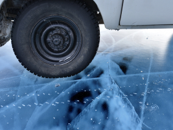
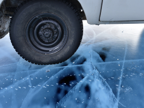
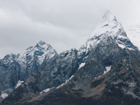
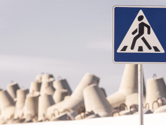
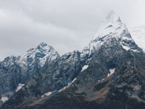
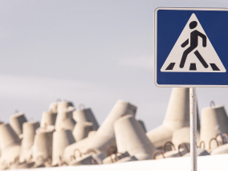
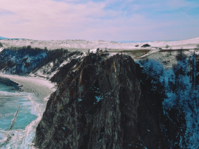
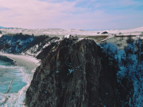

Куршская коса
Здесь, посреди лесов и песчаных дюн, вы сможете увидеть два водных
горизонта — спокойного Куршского залива с одной стороны и
подёрнутого рябью волн Балтийского моря с другой. Уникальная
природная зона на краю российского анклава.
На этом Калининградская область не заканчивается. Для
путешественника и исследователя там же по соседству — самая
западная точка России, Балтийская коса, — и немецкое наследие
россыпи небольших приморских городов. Атмосфера здешних мест
исключает суету, окуная в спокойствие природы и запах
стального, прохладного моря.
Красная поляна
Приезжая на отдых в Сочи, многие туристы стремятся посетить также
Красную Поляну. Всё благодаря огромному количеству знаковых мест и
развлечений, доступных здесь в любое время года. Зимой горный
курорт оккупируют лыжники и сноубордисты, а летом в Красную Поляну
приезжают, чтобы заняться треккингом, хайкингом и альпинизмом, а
также изучить многочисленные природные ключевые места.
Красная Поляна — территория, насыщенная ключевыми местами, на
осмотр которых может не хватить одного визита. Кто-то вдохновится
местной природой, кто-то — историей древних цивилизаций, а кто-то
— возможностью подышать свежим горным воздухом.
Алтай
Алтай — одно из красивейших мест в России. В первую очередь из-за
гор: если ехать вдоль хребта, вы увидите склоны, усыпанные
соснами, горные реки и озёра. А если вы откроете в автомобиле
окна, сможете познакомиться с невидимым чудом здешних мест —
горным воздухом.
Климат на Алтае умеренный, поэтому ехать сюда лучше всего летом.
Так вы увидите всё разнообразие местной флоры и фауны. По лесам
Алтая бродят лоси, над хребтами летают орлы, а на равнинах пасутся
косули. И знаменитые манулы — тоже обитатели Алтайского края.
Зимний Байкал

Всем известен Байкал как крупнейшее озеро в мире. Многие также
знают, что это самый большой источник пресной воды и одно из
красивейших мест в России.
Конечно, это всё так. Но Байкал ещё идеальное место
для соревнований по скийорингу. Это такой вид спорта, когда лыжник
привязывает себя к мотоциклу, и тандем старается развить как можно
бóльшую скорость на льду. В марте 2019 года на фестивале
«Байкальская миля» был поставлен мировой рекорд — 197.011 км/ч.
Карелия

Сибирь заканчивается не на Урале, а в Карелии: образующая тайгу
сибирская лиственница не растёт западнее Водлозера. Зато здесь она
вымахивает на 30 метров — леса карельских национальных парков
из-за непроходимых болот никогда не знали топора. Некоторым соснам
уже больше чем полтысячелетия. Прикоснитесь к живому существу,
видевшему солнце раньше, чем увидал его Иван Грозный. В
девственном лесу на сотню километров не встретишь тропы. А на
редких тропинках деревья в паре метров от земли помечены
медвежьими когтями. Чтобы все знали, кто тут хозяин.


 

 




 
